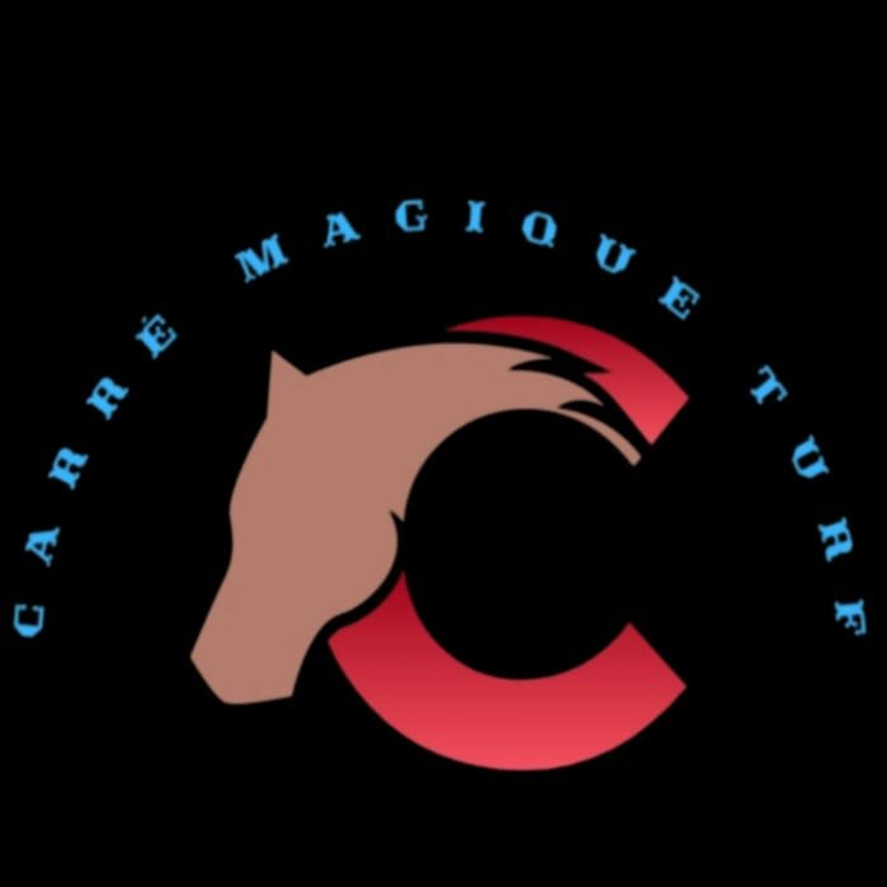

Pronostics Turf Gratuits — Quinté+ · Quarté+ · Tiercé · PMU
Bienvenue sur Carré Magique Turf, votre référence pour les pronostics turf gratuits. Chaque jour, notre algorithme analyse toutes les réunions PMU : quinté+ du jour, quarté+, tiercé, base du jour, tic 3 multi et arrivées officielles.
Pronostic quinté+ gratuit du jour, base du jour, champ réduit et formules optimisées PMU.
Sélection quarté+ et tiercé du jour. Combinaisons Carré Magique pour maximiser vos gains.
Analyses multi : Tic 3 Multi, Multi 4, Pick 5. Sélections Carré Magique Turf.
Arrivées officielles, résultats quinté+, rapports PMU. Historique complet des courses.
Cotes, tendances, alertes colorées. Toutes les réunions PMU analysées en temps réel.
Trot attelé, trot monté, plat, obstacles. Programme PMU complet analysé par Carré Magique.
Chaque jour, Carré Magique Turf publie sa sélection quinté+ gratuite. Notre base du jour identifie le cheval le plus sûr. Toutes les formules de jeu quinté du jour sont disponibles gratuitement, mises à jour toutes les 15 minutes.
Notre analyse couvre le tiercé du jour, le quarté+ PMU, le tic 3 multi et les paris multi. Grâce au système d'alertes Carré Magique (VERT / JAUNE / ORANGE / ROUGE), identifiez en un coup d'œil les chevaux à jouer.
Consultez les résultats PMU et les arrivées officielles directement sur Carré Magique Turf. Chaque page affiche l'arrivée officielle comparée à notre sélection. Suivez notre bilan de performance pour mesurer la fiabilité de nos pronostics turf.